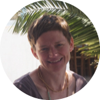
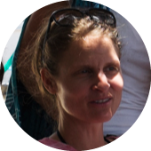
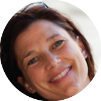

Sandra is practicing Ashtanga Yoga since 2006 with great joy. In 2008/09 she spend a couple of months in india to deepen her practice.
She studied in Mysore with Sri V. Sheshadri and also tried a couple of other Yoga Traditions. In 2011/12 she successfully completed Andreas Teacher Training. She has also been taking multiple workshops and assisted in Teacher Trainings held at Ashtanga Studio by Andrea Lutz, Nancy Gilgoff and Manju Jois. Since 2013 she is assisting Andrea in class.

has studied Ashtanga Yoga intensively and with great enthusiasm for many years. She began to practise with Andrea in 2005 and at the same time Andrea started to educate her in teaching Ashtanga Yoga Mysore classes.
In autumn 2006 she started assisting Andrea with the weekly classes. She took part in several teacher trainings guided by Andrea Lutz, Manju P. Jois and Nancy Gilgoff. In autumn 2007 she started teaching classes in the Ashtanga Studio Berlin.
From 2000-2004, Johanna studied Modern and Contemporary Dance at the Hogeschool voor de Kunsten, Dance Academy Arnhem (NL). Johanna lives in Berlin since 2004, working as a freelance dancer and teacher.

Lilith started her practice of Ashtanga Yoga with Michele Barocchi in 2004 and was certified as a yoga teacher in 2008.
She taught at the "It's Yoga Studio" in Florenz and took part in trainings with David Swenson and Roberto Palagi (Lino Miele's student).
She moved to Berlin in 2008 and became a student of Andrea Lutz. She participated in Andrea's teacher training and in trainings guided by Manju P. Jois and Nancy Gilgoff. Lilith assists Andrea in her teaching and in 2010 she began to teach her own classes at the Ashtanga Studio.
Lilith studied philosophy and literature at the University of Florence with a particular focus on philosophy of the mind and fenomenology.